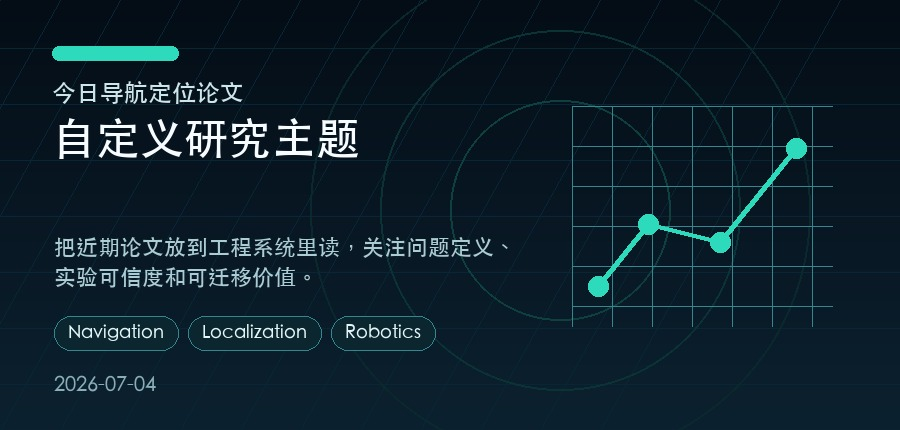

#1 · 2026-07-02 · cs.CV
GeoMix: Descriptor-Free Visual Localization via Global Context and Multi-Detector Training
Yejun Zhang, Xinjue Wang, Zihan Wang, Esa Rahtu 等
质量信号：质量分 12.5；venue ECCV；代码开源
#2 · 2026-07-02 · cs.CL
LACUNA: A Testbed for Evaluating Localization Precision for LLM Unlearning
Matteo Boglioni, Thibault Rousset, Siva Reddy, Marius Mosbach 等
质量信号：质量分 2.5；数据集/benchmark
#3 · 2026-07-02 · cs.CY
Human Capital, Not Model Benchmarks, Predicts Hybrid Intelligence in Forecasting
Vivienne Ming
质量信号：质量分 2.5；数据集/benchmark
01 · 2026-07-02 · cs.CV
作者：Yejun Zhang, Xinjue Wang, Zihan Wang, Esa Rahtu 等
关键词
level
质量信号
质量分 12.5；venue ECCV；代码开源
为什么值得读
这篇论文同时覆盖 自定义研究主题，并在标题/摘要中出现 level 等信号；质量侧还有 质量分 12.5；venue ECCV；代码开源。它适合用来观察该方向近期如何处理鲁棒性、异常检测或融合估计问题。
工程启发
建议重点看数据集、消融实验和失败案例，判断论文方法是否能落到真实平台。
摘要要点
从题名与摘要看，论文主要关注 机器人定位与感知系统中的鲁棒估计问题；技术线索包括 level。阅读全文时建议重点看 问题设定、数据集、对比基线和失败案例，再判断是否适合迁移到自己的工程链路。
02 · 2026-07-02 · cs.CL
作者：Matteo Boglioni, Thibault Rousset, Siva Reddy, Marius Mosbach 等
关键词
level
质量信号
质量分 2.5；数据集/benchmark
为什么值得读
这篇论文同时覆盖 自定义研究主题，并在标题/摘要中出现 level 等信号；质量侧还有 质量分 2.5；数据集/benchmark。它适合用来观察该方向近期如何处理鲁棒性、异常检测或融合估计问题。
工程启发
建议重点看数据集、消融实验和失败案例，判断论文方法是否能落到真实平台。
摘要要点
从题名与摘要看，论文主要关注 机器人定位与感知系统中的鲁棒估计问题；技术线索包括 level。阅读全文时建议重点看 问题设定、数据集、对比基线和失败案例，再判断是否适合迁移到自己的工程链路。
03 · 2026-07-02 · cs.CY
作者：Vivienne Ming
关键词
level
质量信号
质量分 2.5；数据集/benchmark
为什么值得读
这篇论文同时覆盖 自定义研究主题，并在标题/摘要中出现 level 等信号；质量侧还有 质量分 2.5；数据集/benchmark。它适合用来观察该方向近期如何处理鲁棒性、异常检测或融合估计问题。
工程启发
建议重点看数据集、消融实验和失败案例，判断论文方法是否能落到真实平台。
摘要要点
从题名与摘要看，论文主要关注 机器人定位与感知系统中的鲁棒估计问题；技术线索包括 level。阅读全文时建议重点看 问题设定、数据集、对比基线和失败案例，再判断是否适合迁移到自己的工程链路。
具体实验结论建议回到原文核对后再引用。